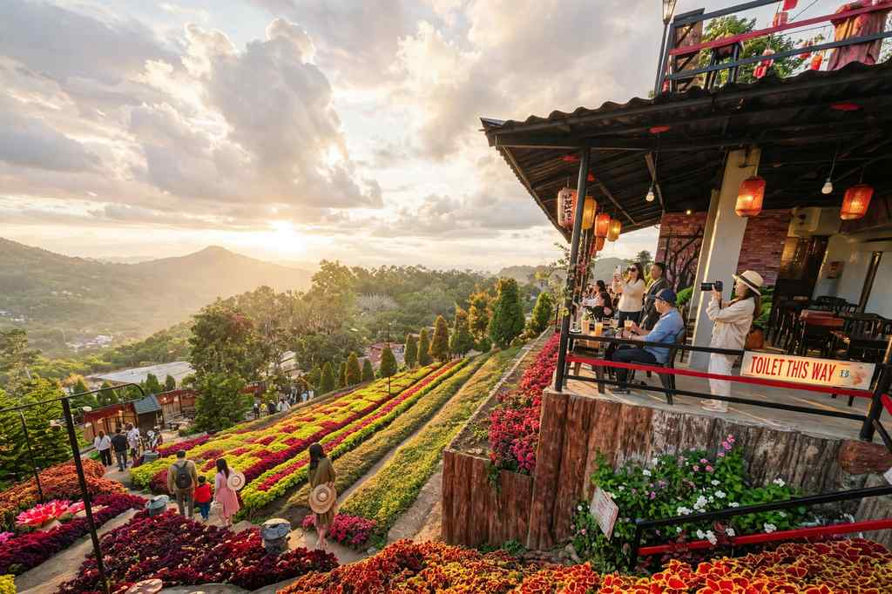

The short answer: February to May is the most reliable time to visit Cebu for dry weather, with March and April the driest months of all. June to October brings more rain but fewer crowds, and November to January mixes cooler air with the year's biggest holidays and festivals, along with a real chance of typhoons.
The long answer depends on what you want from the trip. A beach week, a mountain hike, Sinulog in the city and a budget escape all point to different months. This guide goes through the year one month at a time, using PAGASA's 1991–2020 climate records for Mactan, so you can match the season to your plans.
One thing to keep in mind is that Cebu's weather is not the same everywhere. The south and west of the island have a clear dry season from about November to April, while the north and the islands off it, including Bantayan and Camotes, get rain more evenly through the year.
Cebu's Year at a Glance
These are the long-term averages recorded at Mactan, next to the airport:
| Month | Rainfall | Rainy days | Average high |
|---|---|---|---|
| January | 135 mm | 12 | 29.7°C |
| February | 89 mm | 9 | 30.0°C |
| March | 61 mm | 7 | 31.0°C |
| April | 56 mm | 5 | 32.2°C |
| May | 94 mm | 9 | 32.8°C |
| June | 181 mm | 13 | 32.3°C |
| July | 211 mm | 15 | 31.6°C |
| August | 158 mm | 13 | 31.9°C |
| September | 190 mm | 14 | 31.9°C |
| October | 208 mm | 15 | 31.4°C |
| November | 131 mm | 12 | 31.0°C |
| December | 172 mm | 14 | 30.3°C |
Night-time lows stay between about 24°C and 26°C all year, so "cool" in Cebu means pleasant rather than cold, except on high ground such as Busay or the Dalaguete highlands.
January: Sinulog and Cooler Evenings
January is one of the cooler months, thanks to the northeast monsoon that brings fresher air from November to February. It still sees around 12 rainy days, though showers are often short. The big draw is Sinulog on the third Sunday of the month, which falls on 17 January in 2027. Expect full hotels and heavy traffic in Cebu City that weekend; our Sinulog 2027 update covers what has been announced.
February: The Quiet Sweet Spot
With rainfall dropping to about 89 mm and nine rainy days, February is when the dry season settles in. The festival crowds have gone home and prices ease off. For many travellers, this is the best all-round month: mild heat, calmer seas and fewer people.
March: Dry, Warm and Busy at the End
March is one of the two driest months, with about seven rainy days. It is a great time for beaches, island hopping and the sardine run in Moalboal. In 2027, Holy Week falls from 21 to 28 March, which brings a surge of domestic travel, so book ferries and resorts early or travel in the first half of the month.
April: The Driest Month
April has the least rain of the year, around 56 mm over five days, and highs climb above 32°C. It is the month for clear skies on Osmeña Peak and calm water around the islands. On 27 April, Lapu-Lapu City marks the anniversary of the Battle of Mactan with the Kadaugan sa Mactan re-enactment. School holidays keep beaches busy, especially on weekends.
The dry months are also when Sirao Garden in the hills above Cebu City looks its best. Often called the "Little Amsterdam of Cebu", the garden in Barangay Sirao, along the Transcentral Highway, is known for its terraces of bright celosia, and March to May is the peak bloom. It is about 30 to 50 minutes by car from the city, entry is around ₱100 per person, and early morning or late afternoon gives the softest light and the coolest air.

May: Hot and Still Mostly Dry
May is the hottest month, with average highs near 33°C, but rainfall is still fairly low. Go early in the day for hikes and save the afternoons for the water. Late in the month, the first heavier showers often signal the turn of the season.
June to August: Green Season Begins
Rain returns in June, with around 13 rainy days, and July is one of the wettest months at about 211 mm. Showers tend to come in bursts rather than all day, and the countryside turns lush. Crowds thin out, which makes this a good window for budget travellers who can be flexible. August is a little drier than July, though still unsettled.
September and October: Wet but Lively
September and October bring some of the year's heaviest rain, with October averaging about 208 mm over 15 days. Even so, there is plenty happening. In 2026, Moalboal held a beachside Oktoberfest from 2 to 4 October, and Dumanjug celebrated its Bisnok Festival on 3 and 4 October. Waterfalls such as Kawasan run full, though muddy trails call for good shoes.
November: Holidays and Typhoon Watch
Rainfall eases a little in November, but this is also one of the months when strong typhoons have hit Cebu, including Yolanda (Haiyan) in 2013 and Tino (Kalmaegi) in 2025. Undas on 1 and 2 November and Bonifacio Day on 30 November create long weekends with heavy travel. If you go, keep your bookings flexible and watch the forecast.
December: Festive and Fully Booked
December is the heart of the holiday season, with Christmas lights, family gatherings and busy ports and airports. It is also wetter than many people expect, at around 14 rainy days, and Typhoon Odette (Rai) struck Cebu on 16 December 2021. Book early and allow for weather delays. Our guide to peak season in Cebu and Bohol explains how to plan around the rush.
So When Should You Go?
For beaches and island hopping: March to May, when the sea is calmest and rain is lowest.
For hiking: February to April, when trails are drier and summit views are clearer; our Osmeña Peak to Kawasan traverse guide is a good place to start.
For festivals: January for Sinulog, April for Kadaugan sa Mactan, and October for smaller town festivals.
For lower prices and fewer crowds: June to September, if you can live with showers.
For the best all-round balance: February.
Plan for the Weather, Not Against It
Cebu works in every month, but each season asks for a different plan. Pick the dry months for the sea and the mountains, the green months for value, and the holiday months for festivals, then check PAGASA forecasts in the week before you travel. A little flexibility goes a long way on an island where the weather can change in an afternoon.